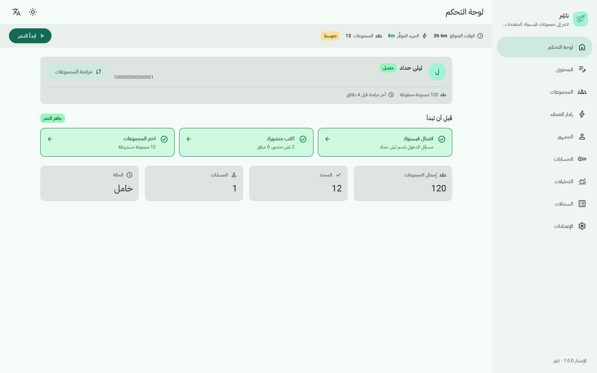
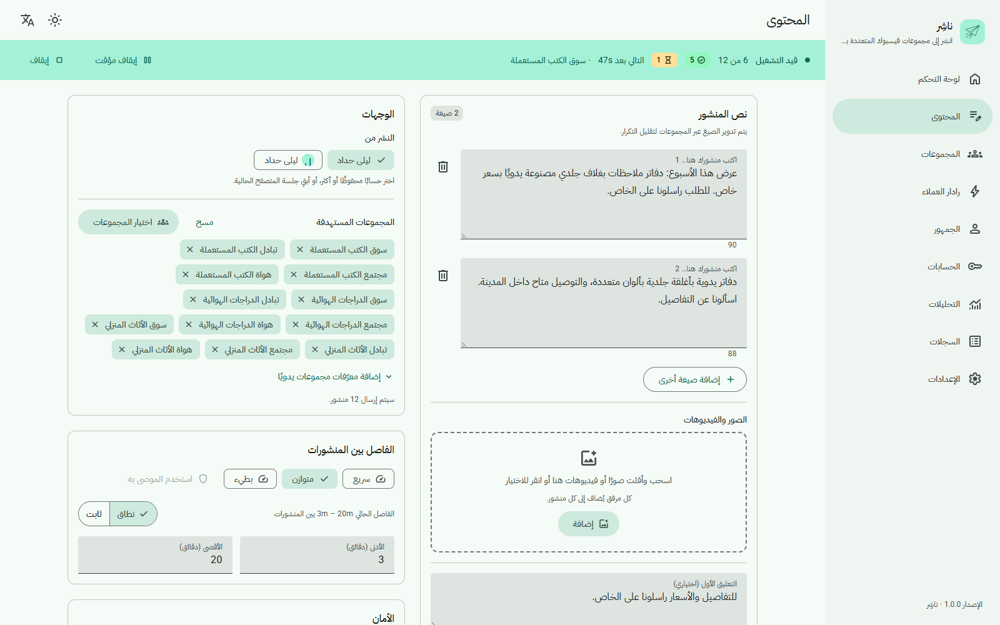
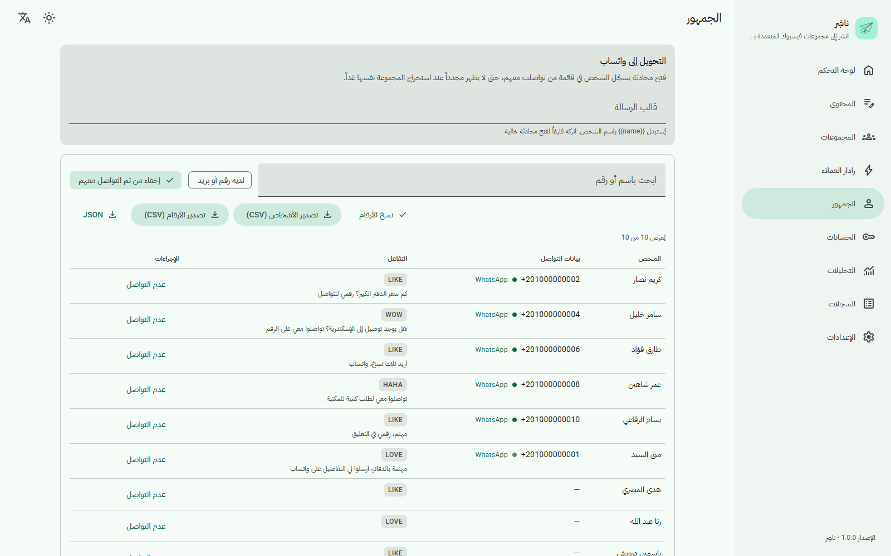
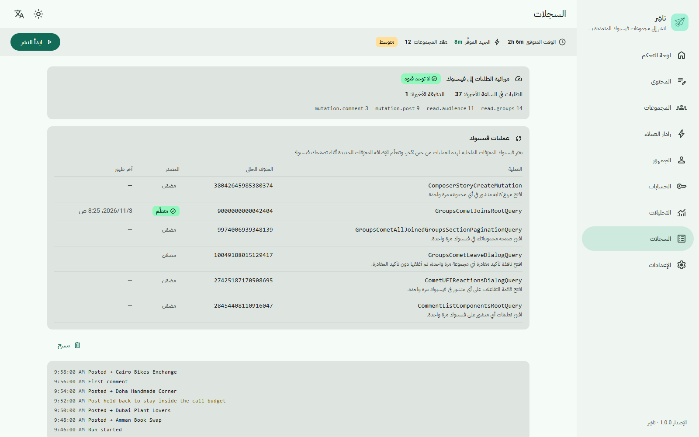
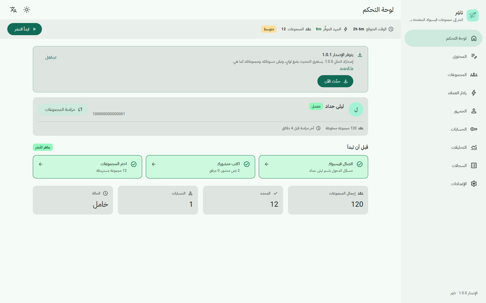
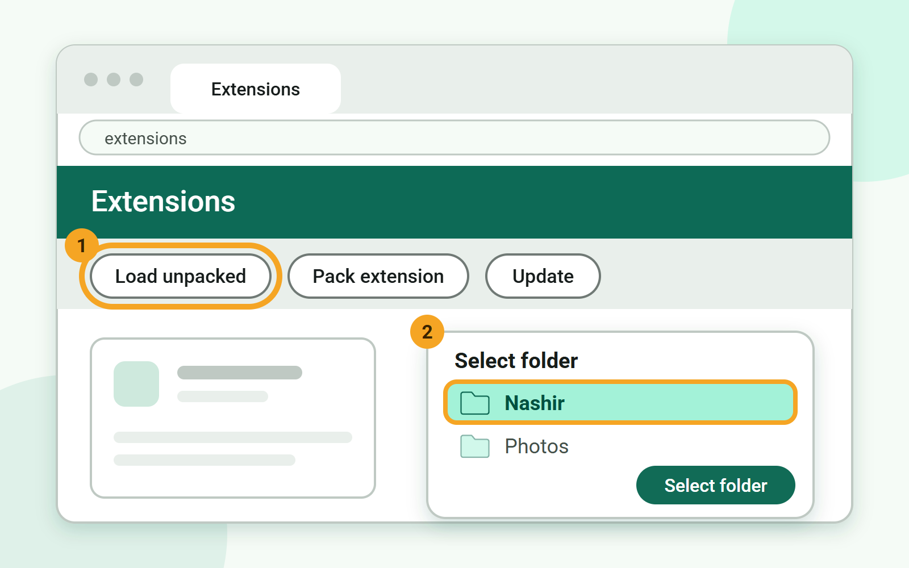
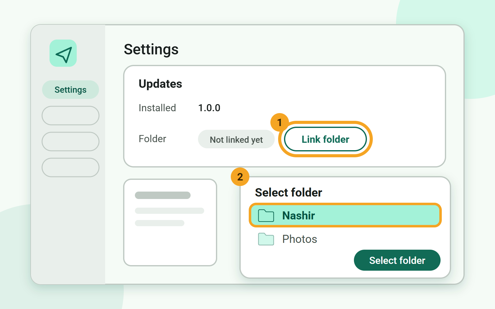

الحملات
اكتب مرة واحدة، واختر مجموعاتك، وشاهد نتيجة كل مجموعة على حدة.
ناشِر (Nashir) لمتصفح Chrome
ناشِر إضافة مجانية لمتصفح Chrome، عربية أولًا، تنشر لك في عدة مجموعات فيسبوك. وفيها حاكم أمان مدمج، فتلتزم بميزانية محددة للطلبات، مع فترات تهدئة وتحكّم في الوتيرة. وكل بياناتك تبقى على جهازك.
يؤتمت ناشِر فيسبوك بجلسة حسابك، وهذا مخالف لشروط فيسبوك، وأنت تستخدمه على مسؤوليتك. التفاصيل

تكتب منشورك مرة واحدة وتختار المجموعات. ثم ينشره ناشِر في كل مجموعة بوتيرة آمنة، ويخبرك بما نجح في كل منها، ويتوقف إذا طلب فيسبوك تحققًا أو أشار إلى حدّ معيّن. وهي تساعدك أيضًا في العثور على المجموعات والأشخاص المناسبين دون أن تغادر الإضافة.
اكتب مرة واحدة، واختر مجموعاتك، وشاهد نتيجة كل مجموعة على حدة.
ميزانية للطلبات، وفترات تهدئة، وتحكّم في الوتيرة، وحدود لكل ميزة. وإذا ظهر تحقق أمني من فيسبوك يتوقف كل شيء حتى تتجاوزه.
شغّل حملاتك من عدة حسابات فيسبوك تملكها.
تابع ما نشرته، وأين نشرته، وكيف سارت الأمور مع الوقت.
اجمع الأشخاص الذين تفاعلوا مع منشور أو علّقوا عليه، بما في ذلك أرقام الهاتف التي كتبوها بأنفسهم في تعليق، ثم صدّر القائمة.
راقب مجموعاتك بحثًا عن منشورات تدل على رغبة في الشراء، ويفحص مجموعاتك المراقبة كل 15 دقيقة تقريبًا.
أضف رابطك أو تفاصيلك تعليقًا أول تحت المنشور تلقائيًا.
اعثر على مجموعات جديدة وانضم إليها على دفعات صغيرة: 8 كحد أقصى في اليوم، و3 في الدفعة، مع فاصل بين كل انضمام وآخر.
يغيّر فيسبوك معرّفاته الداخلية بين وقت وآخر. يتعلّم ناشِر المعرّفات الجديدة من صفحات فيسبوك نفسها، وتعرض البطاقة أيّها محدّث.
واجهة عربية افتراضيًا، وإنجليزية أيضًا، بسمة فاتحة وأخرى داكنة.
تأتي الإصدارات الجديدة من إصدارات GitHub، ويُتحقَّق من توقيعها قبل تثبيت أي شيء.




ناشِر غير موجودة في متجر Chrome الإلكتروني، لذلك تُثبَّت من GitHub. تستغرق دقائق قليلة ولا تحتاج إلى أي أدوات.
نزّل الملف nashir-<version>.zip من آخر إصدار، ثم فك ضغطه داخل مجلد عادي مثل Documents\Nashir. لا تستخدم AppData ولا مجلدًا مؤقتًا ولا مجلد التنزيلات: يقرأ Chrome الإضافة من هذا المجلد في كل مرة يعمل فيها، فيجب أن يبقى في مكانه.
اكتب chrome://extensions في شريط عنوان Chrome ثم اضغط Enter. فعّل مفتاح وضع المطوّر (Developer mode) في زاوية الصفحة العلوية.

اضغط تحميل إضافة غير مضغوطة (Load unpacked) واختر المجلد الذي فككت ضغطه. ستظهر ناشِر في القائمة. يمكنك تثبيتها في شريط الأدوات إن أحببت.

افتح لوحة تحكم ناشِر، ثم اذهب إلى الإعدادات ← التحديثات واضغط اربط المجلد. اختر المجلد نفسه مرة أخرى وأذن بالوصول إليه. بهذا تستطيع الإضافة أن تحدّث نفسها لاحقًا بنقرة واحدة. وإن تجاوزت هذه الخطوة، فسيطلب منك حدّث الآن اختيار المجلد عند أول استخدام.

عند صدور إصدار جديد يظهر شريط في لوحة التحكم.
تفضّل التحديث يدويًا؟ نزّل الملف المضغوط الجديد، وفك ضغطه فوق المجلد نفسه، ثم افتح chrome://extensions واضغط إعادة تحميل (Reload) على ناشِر.
يستبدل التحديث ملفات الإضافة فقط. أما حملاتك وإعداداتك فيحفظها Chrome في مكان منفصل وتبقى كما هي.
استخدمها على مسؤوليتك. يؤتمت ناشِر نقاط فيسبوك الداخلية باستخدام جلسة حسابك المفتوحة في المتصفح. وهذا مخالف لشروط فيسبوك وقد يؤدي إلى فرض قيود على حسابك. يقلّل حاكم الأمان المخاطر لكنه لا يلغيها.
يتعرف ناشِر على رسالة «تأكيد أنك أنت» من فيسبوك ويوقف كل الطلبات لذلك الحساب، لأن الطلبات أثناء الحظر قد تطيل مدته. ثم يطلب منك فتح فيسبوك وإنهاء التحقق. وبعد أن تنهيه، تستأنف من لوحة التحكم.
عندما يشير فيسبوك إلى أنك تسرع أكثر من اللازم، يوقف الحاكم هذا النوع من الطلبات مدة من الزمن. وتعرض صفحة السجلات القاعدة التي انطبقت ومدة التوقف. والانتظار حتى تنتهي هو الخيار الآمن.
لأن متجر Chrome الإلكتروني لا يناسب هذا النوع من الأتمتة، لذلك تُوزَّع ناشِر من GitHub. وكل إصدار موقَّع، وتتحقق الإضافة من التوقيع قبل أن تطبّق أي تحديث.
لأن Chrome يحمّل الإضافة من هذا المجلد في كل مرة يعمل فيها، والتحديث بنقرة واحدة يكتب الملفات الجديدة فيه. والمجلدات المؤقتة ومجلد التنزيلات تُنظَّف أو تُنقل، فتتعطل الإضافة. أما مجلد مثل Documents\Nashir فثابت وسهل الوصول إليه.
لا. يستبدل التحديث ملفات الإضافة في المجلد فقط. وبياناتك محفوظة في تخزين Chrome الخاص بالإضافة، لا في ذلك المجلد.
نعم. ناشِر مفتوحة المصدر بموجب GPL-3.0. لا حاجة إلى إنشاء حساب ولا إلى دفع أي شيء.
يمكن. أتمتة فيسبوك مخالفة لشروطه مهما كانت الوتيرة. صُمّم ناشِر ليكون حذرًا، لكنك تستخدمه على مسؤوليتك.
نرحّب بتقارير الأخطاء والإصلاحات والترجمات والتوثيق.
ABOUT-PENDING
سيُملأ هذا القسم بكلمات المطوّر نفسه.